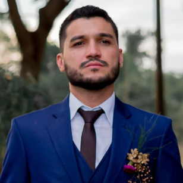

Especialização em Planejamento e Gestão de Eventos
Universidade Positivo · Londrina/PR
Jul 2020
BIOGRAFIA PROFISSIONAL
Minha trajetória é construída no encontro entre comunicação, estratégia de marca e gestão de negócios.

Sou formado em Comunicação Social — Publicidade e Propaganda pela Faculdade Pitágoras, em Londrina, e tenho especialização em Planejamento e Gestão de Eventos pela Universidade Positivo. A comunicação é a base de um percurso que se ampliou para Marketing, Trade Marketing e Gestão Comercial.
Na Dentalclean, percorri diferentes níveis de responsabilidade, de estagiário a analista sênior. Essa experiência incluiu campanhas, eventos, relacionamento com parceiros e atuação como palestrante e mestre de cerimônias. Em outros contextos, trabalhei com inovação, posicionamento de marca, ponto de venda, desenvolvimento de canais e liderança de equipes.
Meu perfil reúne diferentes áreas para conectar a estratégia à execução. Minha atuação passa pela coordenação de projetos, desenvolvimento de pessoas, negociação e acompanhamento de indicadores, aproximando marca, operação e experiência do cliente.
Resido em Cambé, no Paraná, e estou disponível para viagens e mudanças de cidade. Falo português e tenho inglês e espanhol intermediários, nível B2.
Profissional com mais de 9 anos de experiência em Marketing, Comunicação, Trade Marketing e Gestão Comercial, com atuação em indústria, varejo, distribuição, bens de consumo e serviços. Integro estratégia de marca, operação e experiência do cliente, conduzindo projetos, equipes, campanhas, canais e eventos. Tenho um perfil híbrido entre Marketing, Comercial, Comunicação e Gestão, com foco em transformar estratégia em execução. Disponível para viagens e mudanças de cidade.
03 — FORMAÇÃO & DESENVOLVIMENTO
Universidade Positivo · Londrina/PR
Faculdade Pitágoras · Londrina/PR
04 — VAMOS CONVERSAR
Tem uma oportunidade ou um projeto em mente?
Vamos iniciar uma conversa.